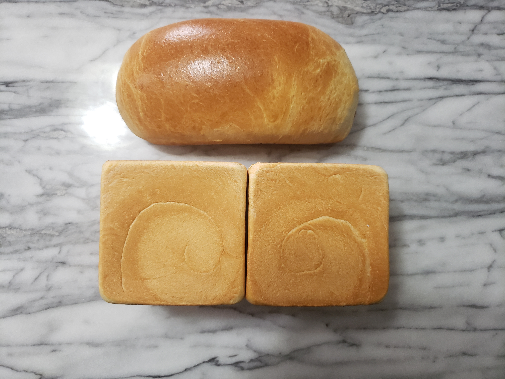
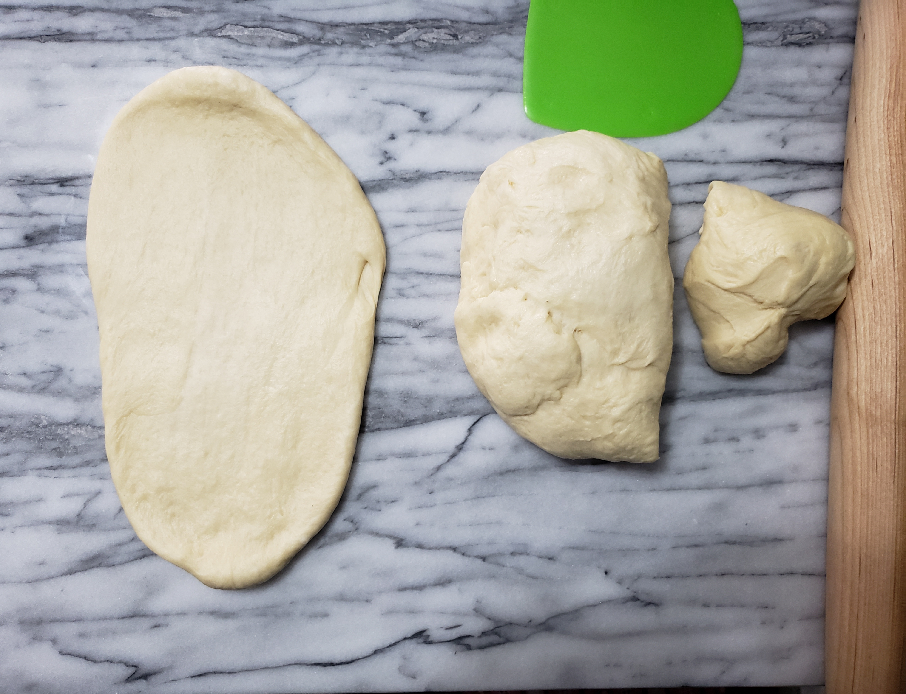
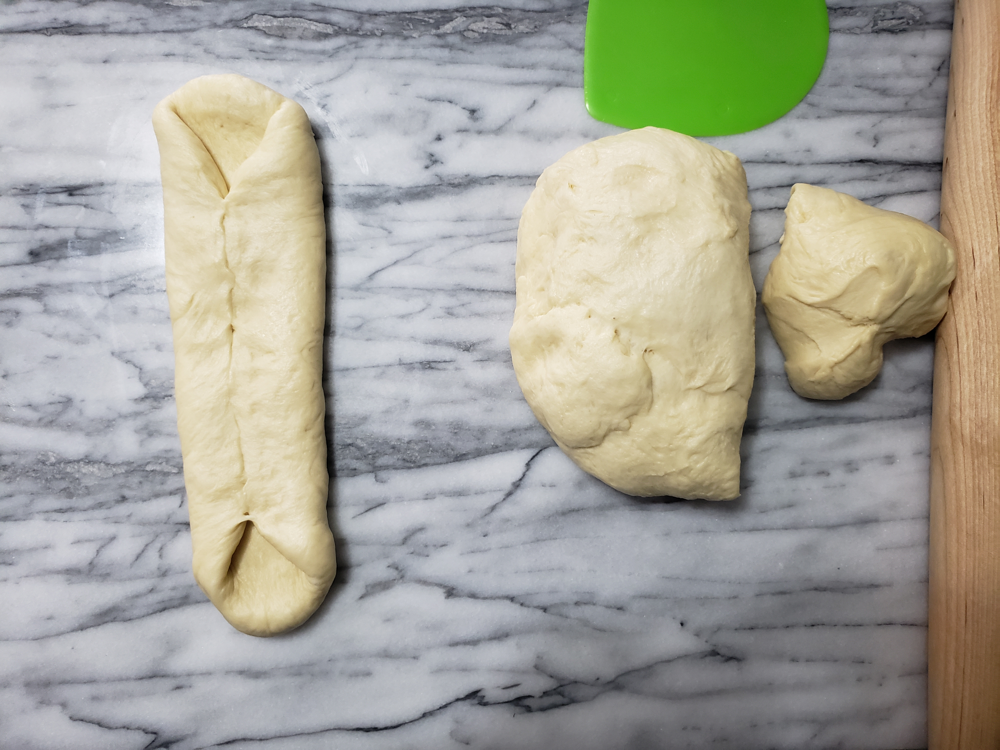
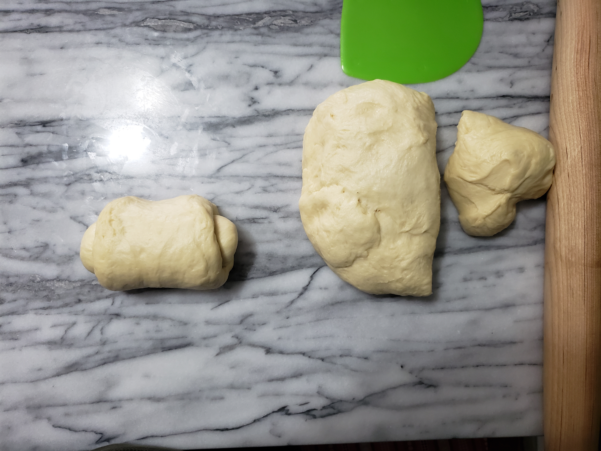

Shokupan (Japanese Milk Bread)

Description:
The Shokupan, more commonly known as Japanese Milk Bread, is a soft & fluffy
white bread made from a tangzhong base. Its texture and ability to retain
moisture makes it a versatile bread for any type of recipe.
This recipe produces 3 loafs using 2 square pullman containers and 1 loaf container.
Ingredients:
Tangzhong
- 25g Bread Flour
- 50mL Water
- 100mL Milk
Dough
- Tangzhong Mixture
- 500g Bread Flour
- 40g Sugar
- 9g Instant Dried Yeast
- 5g Iodized Salt
- 125mL Milk (Room temperature)
- 2 Whole Eggs
- 56g Butter (Room temperature)
Instructions:
Creating the Tangzhong
- Create the tangzhong by mixing water and milk in a pot set at a medium temperature until it reaches a light simmer.
- When the mixture reaches a light simmer, gradually add the bread flour and mix continuously.
- Once the tangzhong is semi-transparent, transfer it to a new container for cooling.
Forming the Dough
- In a stand mixer with the dough hook attachment, mix bread flour, sugar, and instant dry yeast at the lowest speed.
- Gradually add the tangzhong into the stand mixer making sure that it fully incorporates into the dry mix.
- Increase the speed of the stand mixer by 1 level then add in 2 eggs, milk and salt.
- Once all the ingredients are incorporated and form a shaggy-like dough, mix in the butter.
Make sure to periodically stop the mixer if the butter sticks to the bowl.
- The dough is ready once it passes the windowpane test.
- Let the dough rest in a greased (with butter) bowl and cover with plastic wrap until it doubles in volume. Approximately 1 hr depending on kitchen temperature.
Shaping and Baking the Dough
- On a clean surface, begin dividing the dough into 3 equal parts each roughly weighing 330g.
- Roll each piece into a rectangle and fold the long ends into the middle. Then roll the dough from the top to the bottom and seal.



- Butter 2 square pullman containers and the loaf container. Cover the dough with a wet towel and let the dough rest for 30-45 minutes.
- Preheat the oven to 350F and bake for 30-40 minutes.
- Let the dough rest for 10-15 minutes on a wire rack before cutting.